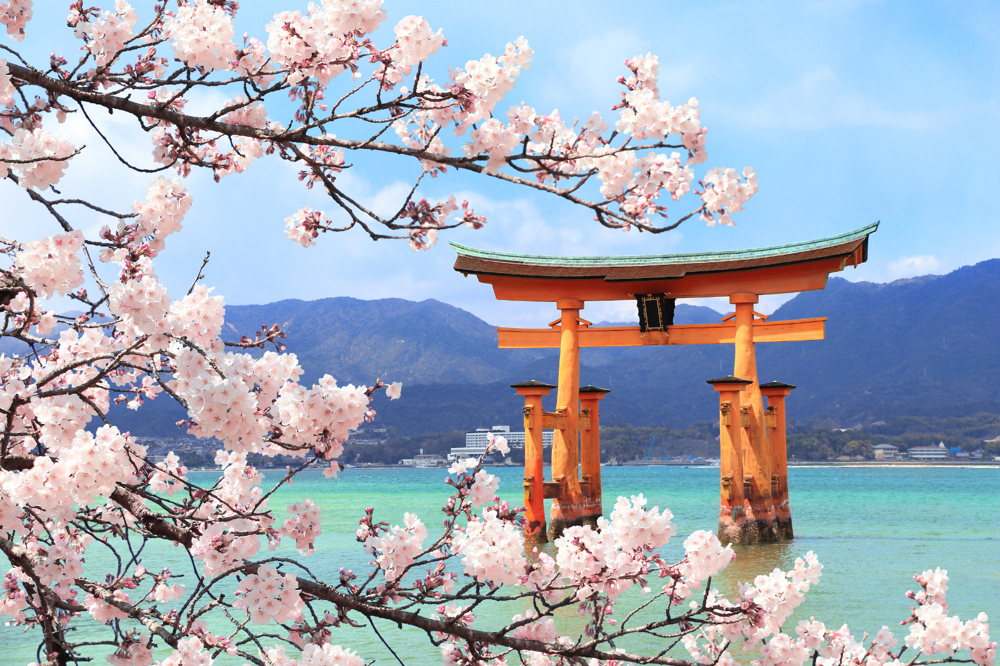
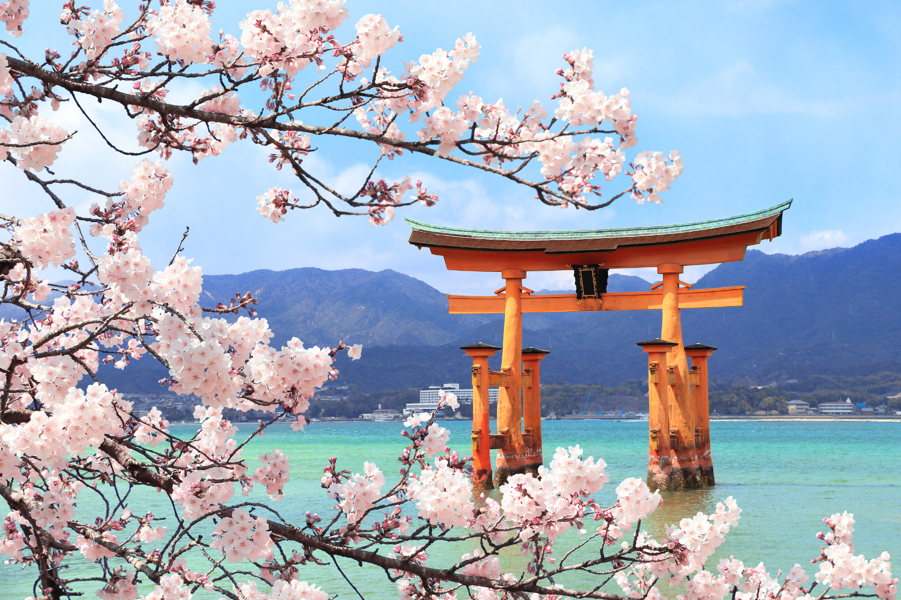

Japan is one of the places in the world, that needs to be visited by tourists. It is a place that stands class apart. You would find futuristic skyscrapers and bamboo forests. Not only those, you would also find neon arcades and a number of serene temples. And the next thing that would entice you to stay in Japan for long is the food and the people over there. All this and more can be covered by you with well planned Japan private tour packages. Japan is one of the most forward-thinking nations in the world. The transportation system of Japan happens to be one of the best. You would just love the ease of travelling in and around the city easily. Japan is also a home to a number of places with tourist attraction, which is the main reason for a number of tourists coming to this year long.
There is so much to explore in this country that you will be at awe eyeing the never ending list. From beautiful natural vistas to extraordinarily fast-paced cityscape, Japan is a place for both the calm seekers and the hustlers. Not only does the country has nail biting folklore but also an engaging history. The traces of which can be found in the landmarks of various cities across the country. It has so much to offer that a few days are just not enough. Therefore, Japan Private Holiday Packages provide you with an opportunity to take your visit to the land of rising sun to another level.
The next thing that adds to the beauty of the place is the climate. Japan has got a moderate climate all over the year. This makes tourism activities possible all over the year. However, the best time to visit Japan is in the time of spring and autumn. Japan is much more famous for its autumn colors. Japan is also a home to a never ending celebration of various rites and rituals. You can come visit in the time of various functions to witness the traditional angle of Japan. Japan truly has a lot to offer. So, you can come with all your loved ones and take a taste of this amazing corner of the world. Book your private tour in Japan with travel triangle and end up spending a beautiful holiday here.
The trip starts when you land. The trip and tour of Japan starts when you arrive to Tokyo. When you reach at the Tokyo airport, our representatives will help you to transfer to the hotel that is booked for the stay. You would be transferred to the hotel for the airport in a limousine. Upon reaching the hotel, you can complete all your check in formalities and then spend the rest of the day in leisure. There will be an overnight at the same bed and breakfast in Tokyo.
A full day tour of Tokyo! On the second day of the trip, you can have your breakfast early in the morning. Then our representatives will help you to start the full day tour. You need to gather at the designated boarding places and then wait for the bus to pick you up. You would drive by National Diet Building and the east gardens of the imperial palace. You would visit Senso-ji Temple and go shopping to the Nakamise Shopping street. You would also drive by the Ginza. After lunch you can go on a cruise on the Tokyo Bay and then spend some time in the Odaiba SeaSide Park. After visiting all the places, you can go back to your hotel and have a night stay.
Trailing the Mount Fuji! On the third day of the trip, you can have your breakfast at the hotel and then proceed to go on a tour to Mount Fuji and Hakone. You need to get ready and gather at the designated starting point. Then you can board the bus upon its arrival and then go to Mount Fuji, then to Lake Ashi Cruise and finally to Mount Komagatake Ropeway. After completing all the sightseeing activities you can board the bus and return to your hotel for the night stay.
Taking a trip to Osaka. You can have your breakfast at the hotel and then proceed to the Tokyo station. Then board the Shinkansen train from Tokyo to reach Osaka. Upon reaching Osaka, you can check in to the hotel and stay there for the night.
Sightseeing in Osaka You can have your breakfast early in the morning and then visit some of the designated destinations of Osaka. You would be picked up from the designated pickup point. Then the tour to kyoto and nara would start. You would be visiting Nijo Castle, Kinkaku-ji Temple, Kyoto Imperial Palace and some nearby place. After that you can head out to visit nara. There you can visit Todai-ji Temple, Kasuga Taisha Shrine and Nara Nagomikan. The tour of the day would end after reaching Osaka. You can then head to the hotel and stay for the night.
Tour to Hiroshima and Miyajima Island. on the 6th day of the trip, you can have your breakfast at the hotel, then head out to visit Hiroshima and miyajima island. This is an optional tour. If you are not interested then you can go for Osaka city tour. There will be an overnight stay at the same bed breakfast at Osaka.